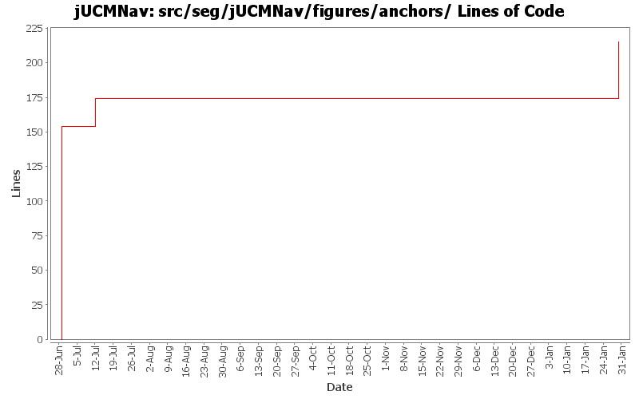

Summary Period: 2005-06-29 to 2006-01-29
[root]/src/seg/jUCMNav/figures/anchors

Total Lines Of Code:
215 (2006-03-31 18:01)
| Author | Changes | Lines of Code | Lines per Change |
|---|---|---|---|
| Totals | 5 (100.0%) | 215 (100.0%) | 43.0 |
| jkealey | 4 (80.0%) | 174 (80.9%) | 43.5 |
| jfroy | 1 (20.0%) | 41 (19.1%) | 41.0 |
Merge of GRL branch with the main trunk
41 lines of code changed in:
bug 344 - localization wizard
0 lines of code changed in:
cleaned seg.jUCMNav.figures.* and added javadoc. fixed a few regression bugs I introduced earlier today. made startpoint figure use center of bounds instead of using absolute offset. cleaned JUCMNavFigure from having redudant info. merged AndFork/AndJoin figures and OrFork/OrJoin figures as they were identical.
20 lines of code changed in:
fixed andjoin/andfork figures; new label now inserted properly.
0 lines of code changed in:
and fork / and join figures
154 lines of code changed in:
Generated by StatCVS 0.2.4